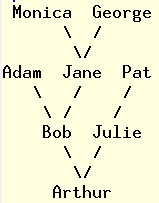

Problem C: Close Relatives
Roger is researching the family tree for his pet quesnot Arthur.
Quesnots are mythical animals who cooperate to raise a number of
young. Adult quesnots form a parenthood of up to ten parents to raise
a litter of young. Once the young have matured, all parents are
exhausted and cannot help raise a second litter before they die.
Roger has determined some of Arthur's ancestors' families, but is
having trouble determining whether certain relatives are ancestors of
another. He has written a program to calculate this fact, but Roger
requires lists of a particular format. Your job is to convert his
family tree into one or more lists for him to use.
Input
A family tree will be given as input. Each line will consist of a
quesnot name, possibly followed by a list of at most ten parents.
Each name will be at most 30 characters, and may include letters,
numbers, hyphens, spaces or periods. Names on a line will be separated by
commas. There will be at least one and at most 5000 unique names in the
tree, and no quesnot can be his own ancestor.
Recall that each quesnot
will have at most one child. Brothers and sisters, aunts and uncles
will not be included in the input. Each name will occur as the first
name on a line at most once. You may assume that the first name on the
first line is the bottom of the tree (i.e., will have no children),
and that this is the only name in the file with no children.
Output
You are to produce a minimum number of lists with the following
properties:
- Every quesnot mentioned in the tree occurs in each list exactly once,
- Quesnot A is an ancestor of quesnot B exactly when
A appears before B in every list.
The first line of output indicates the number of lists m,
m > 0. A blank line then appears. Following are
m lists, each containing all names in appropriate order. A
blank line appears between lists.
There may be several solutions satisfying these requirements. Any such
solution may be chosen.

Sample Input
Arthur,Bob,Julie
Bob,Adam,Jane
Jane,Monica,George
Julie,Pat
Output for Sample Input
2
Adam
Monica
George
Jane
Bob
Pat
Julie
Arthur
Pat
Julie
George
Monica
Jane
Adam
Bob
Arthur
Richard Krueger